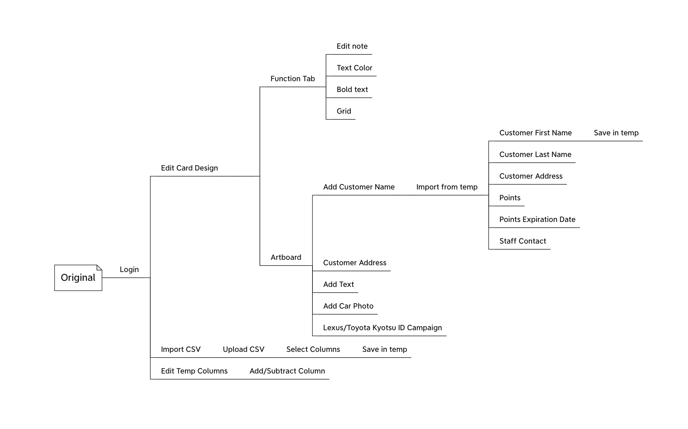

Toyota Retailer Mail App
User Resesarch, UX & Print
Overview
While working at Kinki Research Center, I helped redesign Toyota retailer company's mail web app to help staff create client mail.
Template Redesign
Original


Goal
Improve UX and template design
User
Staff, Manager & Customer
My Role
I was main designer in collaboration with boss/chief programmer,
working part-time for four months
Constraints
- Unable to talk to client or user directly.
- PDF-extracted text requires manual adjustments and cannot be stylized.
- Staff and customer are new to apps and training cost is high.
Research
- I learned that family vans are Toyota and Honda's best sellers in Japan. Therefore, I drew nature elements in the template to invoke the travel vibe.
- To communicate project scope with the programmer and to improve UX, I created use case and persona.
- Staff opens up the app, thinking after sending out the cards, some would visit soon.
- Open the app, select a template.
- Upload customer CSV sheet. Start editing.
- Begin with Staff Note. Type. Save.
- Move on to Sales Campaign. Use ready-made campaign designs. Move on to Recommended Car.
- Choose car-recommendation-related columns from CSV sheet.
For customers that have interested car models, upload images accordingly.
For those who do not, recommend base on current car type or omit the section. - Move on to Toyota app launch info. Use existing design. Front-side finished.
- Move on to customer address section. Choose name-and-address-related columns from CSV. Input in card.
- Manually adjust extracted text object frames.
- Move on to point balance. Select point-related columns from CSV. Input in card.
- Manually adjust extracted text object frames.
- Move on to point exchange method explained section. Define point gift image base on royalty levels.
- Move on to contact section. Use stored data of staff name and store address.
- Move on to HQ address section. Default info is fine. Design finished.
- Print sample using the printer in the office. Look good.
- Generate 100 mails. Check on screen? Send data to print shop.
Staff Use Case
- Age 38/ Marketing Director/ Two children, one five, one six/ Yearly Wage ￥4,800,000.
- Have been working on the point exchange campaign for three years. Excited to finally launch it.
- Oversee eight stores sales campaign.
- Want to check postal design for unhealthy competitions among stores or staff.
- Three to four staff per store, total 32 staffs,
- One staff manages about 100 clients, the company has total 3,200 clients.
- Postal designs are sent based on point levels.
- If there are four levels: under 3,000, 3,000+, 10000+, 20,000+, Then 4 levels x 32 staffs = 128 postal designs. Does he need to check both sides of the design, or only the staff note section?
HQ Manager Persona
- What kind of unhealthy competition is he worried?
- Is he trying to connect sales result with a perticular staff's card design?
Questions
Original Information Architecture
Redesign

Prototype
Reflection
- The new template is much more organized and easier to read.
- The information architecture has became more clear and will serve as a communication tool between designer and developer.